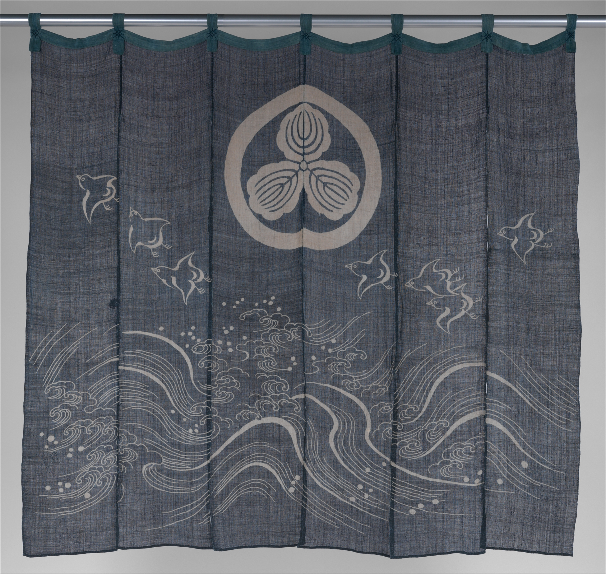
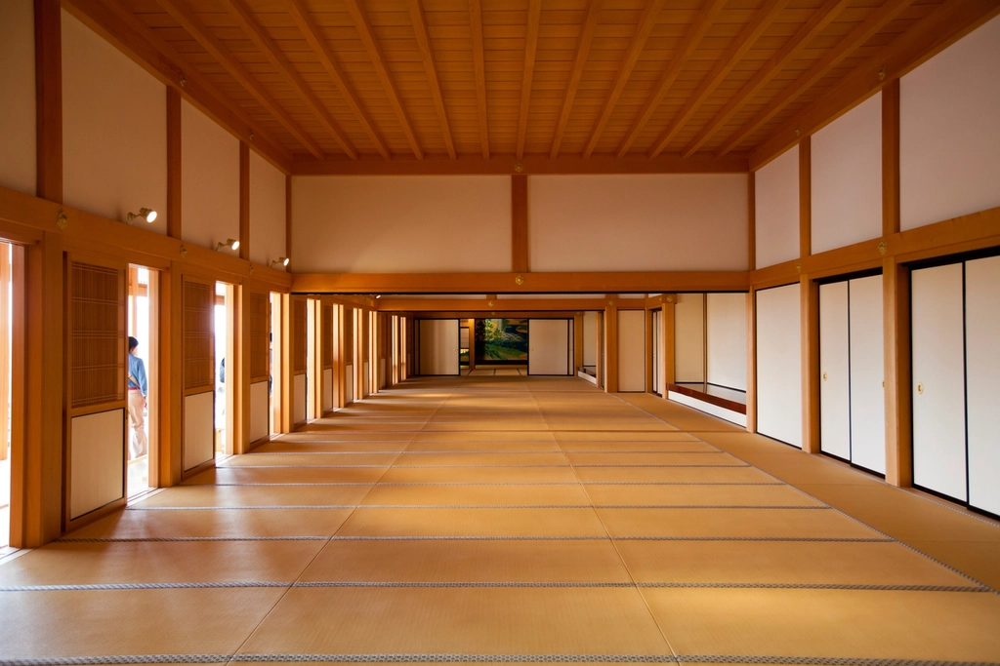

01
毎日仕入れる刺身・活き造り
刺身は毎日市場へ足を運んで仕入れているとのお声をいただいています。盛り合わせはもちろん、宴会では活き造りの一皿が並んだという声も。鮮度へのこだわりが、多くのお客様から支持されている理由のひとつです。

新潟県新潟市南区白根 / たべどころ
新潟市南区白根で、毎日市場へ仕入れに向かう刺身と、ひとつひとつ手づくりの一品料理。一人でのふらり立ち寄りから宴会まで、気取らずに過ごせる一軒です。
「隠れ家」という言葉は、伊達ではありません。ご来店くださった方々から、幾度となくいただいている言葉です。古めながらも渋さの漂う内装、そして地域に根ざした常連さんの顔ぶれ――たべどころには、気取らない大衆酒場ならではの空気が流れています。
接客もまた、かしこまりすぎない、フランクなもの。大きな看板を掲げた華やかな店構えというよりは、白根の街に静かに馴染んで長く愛されてきた、そんな佇まいです。一人でふらりと暖簾をくぐる方も、気の置けない仲間と連れ立って訪れる方も、同じように迎えてくれる場所。だからこそ「隠れ家」と呼ばれるのでしょう。

のれんをくぐるたびに見えてくる、たべどころのいろいろな顔。
刺身は毎日市場へ足を運んで仕入れているとのお声をいただいています。盛り合わせはもちろん、宴会では活き造りの一皿が並んだという声も。鮮度へのこだわりが、多くのお客様から支持されている理由のひとつです。
出汁巻き玉子や鶏の竜田揚げ、ジャンボ焼鳥など、どれも手づくりの一品料理が並びます。なかでも新潟の郷土料理「のっぺ」は、ホタテの出汁がきいた上品な味わいと評判。地元の味を、気取らずに楽しめます。

ふらりと一人で立ち寄る方も、8人ほどの懇親会で利用する方も。「部屋も広く」というお声もあり、少人数からグループまで受け止めてくれる懐の深さが魅力です。

内装は古めながらも渋さが漂い、地域に根ざした常連さんの姿も見られます。気取らないフランクな接客も相まって、肩の力を抜いてゆっくり過ごせる空間です。
Googleクチコミでいただいたお声を、匿名で要約してご紹介します。
★★★★★
5ヶ月前のお声
刺身の盛り合わせや出汁巻き玉子が美味しいと評判です。おにぎりもふんわりとした握り心地でご好評をいただいています。なお、駐車場は停めにくいとのお声もあるため、お車の方はご注意ください、とのことです。
★★★★☆
2年前のお声
「ホントの意味で隠れ家的」というお声をいただいています。内装は古めながら渋く、客層も地域密着型で、フランクな接客が心地よいとのこと。魚河岸セットや馬刺し赤身、和風おこげの野菜あんかけなど、手づくりの一品料理がしっかりしていて美味しいと評判です。駐車場は狭いため、お車でお越しの際は店舗南側からのルートが強く推奨されています。
★★★★★
1年前のお声
一人飲みから団体利用まで、部屋も広く何を食べても美味しいというお声をいただいています。なかでも刺身がおすすめとのことで、毎日仕入れに行っているそうです、とのコメントもいただいています。
★★★★★
11ヶ月前のお声
8人ほどの懇親会で利用されたお客様より、活き造りのお刺身やすべて手づくりの料理、たっぷりの生野菜に感激したとのお声。なかでも「のっぺ」はホタテの出汁が効いた上品な味わいで、「ピカイチ」と評判でした。
※氏名・プロフィールURLは掲載しておりません(匿名表記のみ)。